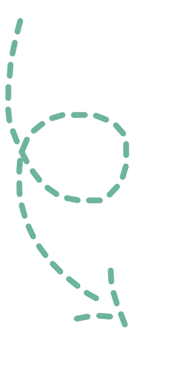
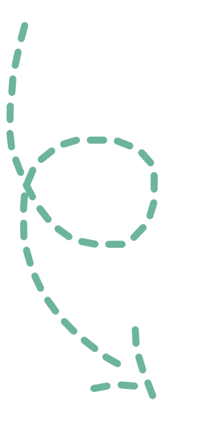

КАМЧАТКА
Страна вулканов и гейзеров
DiscoveRussia
КАМЧАТКА
Страна вулканов и гейзеров
Путь
Как добраться?

Из Владивостока в Петропавловск-Камчатский. Цена: от 8000 RUB. Из аэропорта “«Елизово»” в центр совершает рейсы автобус. Цена: 30 RUB.
Туризм
Что посетить?
 

Камчатка — дальний уголок нашей страны, географические особенности и первозданная природа которого привлекает отважных путешественников, не боящихся столкнуться с трудностями. Край гейзеров и вулканов!
Авачинская бухта
Авачинская бухта или губа — одна из крупнейший в мире. Она способна принять судно любого размера, и даже одновременно почти все торговые корабли в мире! Главная и самая узнаваемая достопримечательность губы — скалы «Три брата» или «Ворота города». Эти каменные столбы стоят на входе в 300 м от берега, и часто изображаются как символ всего города. Со скалами связаны легенда. Давным-давно на побережье было поселение, которое постоянно терпело потери от сильных волн. На защиту вызвалось три брата. Они пошли в залив и встали, заслонив собой берег.
Долина гейзеров
Вдоль речки Гейзерная располагается каньон, общая площадь которого составляет до 6 км². В этих, устроенных природой пределах и находится долина гейзеров, вмещающая в себя множество гейзерных выходов, грязевых котлованов, водопадов, термальных площадок, природных водоемов, горячих источников. Красота долины уникальна и поистине ошеломительна. А еще долина возглавляет список семи чудес России, уступая только Байкалу
Курильское озеро
Озеро является наиболее крупным местом нереста нерки на евразийском пространстве. Есть предположение, что более крупного нерестилища этой рыбы нет во всем мире. Среди частых гостей приозерной местности — бурые медведи. Многие туристы отправляются сюда именно ради того, чтобы воочию наблюдать за медведями. За жизнью мишек можно наблюдать буквально в десятке метрах от них.
Голубые озёра
Голубые озера Камчатки — это памятник природы, который называют лазурными из-за их прелестного ярко-голубого оттенка. Благодаря кристально чистой воде озер и льдинкам, находящимся на их дне, вода буквально светится голубым. Такой ультрамариновый оттенок достигается за счет преломления солнечных лучей. Все мы знаем эти озера под названием — голубые, но сами камчадалы прозвали их Верой, Надеждой и Любовью. Они не про сто их уважают и заботятся о них, они их любят и чтят.
Отели
Где остановиться переночевать?

"АЛЬФА-guest"
"Отличное место для отдыха,неплохой вид из окна" "В номере есть маленький холодильник, сейф, выдают чайник."
Цена: 3200 RUB.
"Не дорогой отель, правда и качество услуг по этой цене" "Номера небольшие, но в целом уютно и хорошо, но вид на бухту очень красивый"
Цена: 3640 RUB.
“Гейзер”
“Авача”
"На завтрак шведский стол, обед и ужин три набора на выбор." "Очень удобное расположение, рядом остановки, магазин, аптека, рынок."
Цена: 6659 RUB.
"Отличная кухня в кафе при гостинице, все было вкусно и недорого" "5 минут до аэропорта, вкусные завтраки и уютные номера!"
Цена: 7883 RUB.
“Mercure”
Питание
Где остановиться перекусить?

“Алхимик”
ТИП КУХНИ Европейская, Восточноевропейская, Центральноевропейская, Морепродукты ВРЕМЯ ПРИЕМА ПИЩИ Ужин, Обед, Открыто допоздна, Напитки
ТИП КУХНИ Морепродукты, Средиземноморская, Европейская, Русская, Центральноевропейская, Здоровая ВРЕМЯ ПРИЕМА ПИЩИ Обед, Ужин, Бранч, Открыто допоздна, Напитки
“Сан Марино”
ТИП КУХНИ Европейская, Русская, Центральноевропейская, Бар, Супы ВРЕМЯ ПРИЕМА ПИЩИ Ужин, Обед
“Старый Замок”
Камчатка — это удивительное место настоящих красот, нетронутых рукой человека. Все, что вы увидите на этом полуострове, создано самой природой и покоряет сердца приезжающих сюда туристов. Вот и окончилось наше путешествие по востоку России! Благодарим за оказанное внимание и желаем отличного путешествия от всей команды DiscoveRussia!
Путешествуй с DiscoveRussia